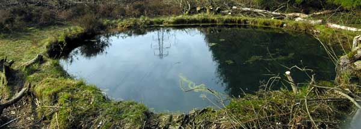

This website was setup to retain and continue all the good work and valuable information collated by the late Nigel Turnbull.
All first-person references within the text are referring to Nigel.
The Torwood Blue Pool is a round brick lined pool which in a cleared strip of Tor Wood to the south west of Torwood, north of Denny and Larbert.

The questions:
- What was the function and purpose of the blue pool ?
- When was it built ?
- Who built it ?
- When did it cease to have a purpose ?
- Where does the water come from and why does the level change ?
- Did you ever swim in it ?
What we know so far
Land Utilisation Map
I first came across the blue pool in 1961 when I was ten years old. I lived in nearby Dunipace. The pool looked exactly the same then as it does now but I don’t remember there being any trees around it.
My uncle, also a local, remembers it from his youth (late 1930’s) and described it as looking just the same.
A lifetime later I had forgotten the exact location of the blue pool but rediscovered it in 2007. Most people I speak to refer to it as the Blue Pool. The blue pool had a remarkably vivid blue colour and was crystal clear. It was like looking through a blue diamond and you could see the bottom quite clearly — according to my 45 year old memory.
The blue colour, it seems, is not that big a mystery. I wrongly thought that water got its blue colour from reflecting the blue sky but it seems that clear deep water refracts light in such a way that it produces its own blue colour.
Torwood Pool looking blue
If the above is true I would expect to see the same colour in our reservoirs but I have never seen that blue colour anywhere in Scotland other than the Torwood Blue Pool. Are there any water and light-refraction experts out there ?
Could the blue colour have anything to do with dissolved chemicals or minerals ? Nobody who was exposed to the water has reported a desire to put the letter ‘S’ on a T-shirt and leap tall buildings.
If the pool was being fed by an external source of water, I would rather expect the level to be constant but this is not the case.
Is it simply being topped up by rainwater and evaporating during dry spells? Would this make it a ‘stagnant pond’?
If so why is the water so clear and odourless? is the algae and plant life keeping the water clean?
Looking West-ish
Heather Livingston from Ontario, Canada.
There were no trees near the pool in 1983. The only trees were across from Torwood castle.
For some reason we always stayed on the side looking towards Torwood castle — smoother land? I remember getting out of the pool the same place as the dogs do — not sure why.
It was always an open area. Only walking on the foot path [right of way path to Denovan, heading south] near the castle were there trees — then it opened up to open fields.
I do remember the water being clear too and seeing the bottom in 1983. I just remember the debris of trees at the bottom. I never actually swam to the bottom.
Looking North-ish
Caroline Kerr from Aberdeen, Scotland.
I grew up in Dunipace and visited the blue pool quite often while out walking. I always wondered what it was for. My father said it might be an old airshaft for a mine. I have written in my photo album that the pool is very blue.
For further reading, please start at the posts page.
Could the pool be linked to the nearby Castle and dare i say it the older Broch? some type of water reservoir / supply maintained throughout the ages?
Dear All,
I researched the site after I learned that Nigel had sadly passed away and went to the BGS in Edinburgh to get the historical records of the mine. These show that the mine stops in line with a fault several hundred meters short of the Blue Hole. There is however a seam of coal that runs directly under the blue hole although there is no records of mine workings.
I dived the site and went into the small archway shown in some of Nigel’s pictures. Inside the tunnel is about 6ft wide and about 10ft high with archways (very well built brick similar to a sewer) every 12 ft or so. The tunnel ends quite abruptly in a brick wall about 30 ft from the entrance/exit. There was no sign of a shaft and no sign of a shaft cover in the ceiling that is usually directly above the main shaft in “dog-leg” air shafts. the floor was littered with debris and fine silt. If there had been a shaft I would have expected there to be a large “dent” in the silt at least. I pushed my hand into the silt but could not feel a bottom. So it is at least 2 ft deep.
Note: There are no tunnels leading anywhere else from this structure.
Based upon this, the coal seam and the blue waterproofing clay which lines the outside of the brickwork I would suggest this is indeed a small coal gas plant. The 20ft circle would have housed the tank which could be raised and lowered and the site always contained water.
Hope this helps.
hi I came up with the theory of the gas works be hide carbrooke house I now have photos of carbrooke house and its grounds any way back on this the problem is the dowsing rods the only way you can believe this is you have to witness it I took Nigel with me one day to show him. The gas works at the back of Carbrooke house are linked to the blue pool and also the coke killins at plean cross roads the blue pool has at least four single tunnels some splitting into two these tunnels are around 6ft wide and I have folled them for miles they are there! would be very happy to organize a field trip in the future
Happy new year to all
Hi Stephen Rae
I grow up inTorwood and know this area like the back of my hand, using my dowsing rod tecnic I have followed many tunnels from the blue pool some appear to go up hill to the carron dam area I followed one to the site of carbrooke house where I found a second blue pool which was filled in but it has the same cast iron pipes and bricks in it. Another on heads down to the knew Denny high school area but the one you would be interested in is the one that runs in a straight line under Larbert high school playing fields straight into carron iron works between the clock tower and the river carron seems to continue through Langlees but by this time my feet were sore lol
At the wkend I found something very simuliar with a brick roof and an arch way door full of water in Plean country park , I also beleive there is a tunnel from Carbrook House blue pool to the old cook killians at old Plean cross after many many years of seraching I still have no idea what they are.
The answer to the mystery has been on the page for some time now. It is only this evening that I noticed it. That is a old grey photo of an adit at Muiravonside.
I typed “Coal mine air shaft pumping station” into google and clicked the images tab. Woof! The similarity of the blue pool to that of air and/or water pumping stations is far too coincidental to ignore.
The remains at Torwood could have been either or – even a combined air and water pumping installation. The actual shaft must have been bored from the surface – distance from the ‘pool’ being the distance of the ‘tunnel’ leading away from the main part. There is sufficient evidence of disturbed ground at that point to support this.
The shaft wouldn’t need to be of large diameter and so that would mean it was bored rather than sunk like a large diameter shaft would be (and the massive amount of spoil that would have been in the immediate locality. There is none).
Whether the function of the shaft was to pump water from the workings or suck air from or pump air to is a technical question but the existence of the inspection pit (that up to a year or two ago contained an off/off key) a few metres away suggests water pumping may have been a main purpose, there also the matter of the numerous small bore outlets in the wall of the ‘pool’ chamber that Nigel so diligently recorded.
I throw these observations up for debate & discussion.
Maybe I’ll eat my hat after the above post, maybe not. Anyway a very familiar looking structure is to be found west of Hamilton, east of East Kilbride in a field of a B road. Here is a link to the photo of it on Geograph http://www.geograph.org.uk/photo/1224744
And here is a link to the O.S. map Lanarkshire 017.06
Publication date: 1897 which names this object/structure as ‘Tank’ – the same as the Torwood one was so named by the .O.S.
http://maps.nls.uk/view/82892976
I will be visiting this site soon.
Went a lovely walk to Torwood Castle today and came across the Blue Pool. The exposed brick lining suggests someone is carrying out maintenance. The water is definitely a distinctive blue colour. Water was very clear , even when our labradoodle fell in and had to be rescued.
Would love to know what was the purpose of this pool, who built it, and why.
🙂
My dad worked at carron works and when ground works started as prep for a new machine shop way back in he early 80’s there were underground channels for water hydraulics uncovered that would have been used for this cheap and renewal power. The position and height difference of the pool relative to carron could possibly have provided the head of water required to drive their early machinery and would not have had to be maintained at a specific level. Info’ can easily be found quoting water powered cranes being employed in use at carron. This may seem a long shot but I covered hydro power during my degree and the power available through pipe reductions would have been massive. This may offer a new area of stud and I’m only sorry to have read this site and sent this after Nigels unfortunate passing. All the best in your future and further investigations.
Thanks for the info! I’ve moved your comment to the homepage.